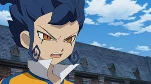

切りの良い部分で二作構成にしようと思ったが、あまりにも言いたいことが多すぎてひとまず、一星が正式にメンバー入りして流れ的にここで一区切りだろう13話まで視聴した感想を書くことにした。
アレスの天秤を「思ったよりは悪くない」と評したがオリオンの刻印を機に「雲行き怪しくなってきた」まである。
・他チームと絡まない
世界大会になったからには他チームとの接触やコンビ技などあると思われたが、前項目で前述した通り、伊那国雷門でコミュニティが完結しきっており、精々野坂と灰崎、後は円堂と少し会話する程度で他チームの選手と絡む。コンビ技を使うというシーンがない。
灰崎が序盤から同じく血の気の多いヒロトとぶつかり合いながら合体技を披露した辺りから明日人に対する扱いの隔たりを感じずにはいられなかった。
・野坂には勝てなかったよ
まさか今作のキーマンであり4人目の主人公として扱われている一星を変える役目すら、野坂に持っていかれるとは予想だにしなかった。ここらの野坂に対する話は後述
・円堂という壁があまりに高すぎた
円堂と明日人は似た雰囲気を感じさせる人間であり光と称されていたが、明日人個人の個性が希薄なまま一期を終えてしまったが為に「チームのムードメーカー」などと評されていたがずっと士気を維持させていたのは円堂と野坂で彼自身の活躍は全く感じられなかった。
正直円堂さんから「敵は他のチーム」発言は聞きたくなかったが、一星の事情を知って、何度も彼の陰湿な罠を受けてもがむしゃらに信じ続け、人格が不安定な彼を試合に起用するが自分が必ずゴールを守ると有言実行した姿は主人公のそれであり、明日人自身も彼を信じ続けてはいたのだが、明確の彼の行動が一星を変える契機になったのかと言えば疑問が残る描写が多く、功績の半分以上は野坂と円堂に軍配が上がってることだろう。
・知らないのに茶々入れる
「アレスの天秤」でも思ったが「何も知らないからこそ言えること」と「何も知らない癖に持論だけで横槍入れてくること」は天と地ほども違う。
灰崎や野坂、鬼道さんや一星の事情は知らないが「サッカーへの侮辱は許さない」それで一貫して居ればまだ彼自身のアイデンティティにもなり得たが彼自身の株を落としたのが
「グリッドオメガ2.0」。
前身の「グリッドオメガ」はアレスの天秤でも登場した王帝月宮の必殺タクティクスであり、端的に言うと「敵を空高く吹き飛ばして地面に落下させて敵チームを物理的に試合続行不能に落とし込む」と言う超次元サッカーと言うには何かを逸脱した技だ。
この「グリッドオメガ2.0」を手術から復帰した野坂が初登板した際に、彼の指示で散々卑怯な手を使ってきた対戦相手へ制裁的に使うこととなった。
2.0と言うからには「相手を傷つける技」でなく「正々堂々真正面から勝つ技」に進化すると思っていた。
「敵をぶっ飛ばす技」から「多少威力は落ちているがまた敵を物理的にぶっ飛ばす技」に進化させて「目的の為には手段を選ばない男」として野坂を飾り立てる引き立て役とされ、ここまで明日人は散々「人を傷つけるサッカーなんてサッカーが悲しんでる」とかなんとか宣っておいて「野坂完全復活だ」と喜んで知らず知らずの内にグリッドオメガの練習させられてたことは全く触れていない。
・必殺技を全然使わない
灰崎やヒロトなどが積極的に必殺技を使ってシュートを決めたりしているにも関わらず明日人はFWからMFにコンバートされたがそれを差し引いても全然必殺技を使っているシーンがなく、野坂と灰崎が早々に新必殺技を披露してるのに彼だけ必殺技の機会すらあまり恵まれなかった。
超次元サッカーなのだから、多少シナリオがまずってても派手な必殺技のぶつかり合いこそ本作の魅力だった筈だが、肝心の主人公が一番使う機会に恵まれておらず、天馬が新シリーズ始まると早々に新必殺技披露してくれたことを思うとかなりの物足りない主人公という印象が拭えなかった。
2期のキーマン。イナズマジャパンにオリオン財団から送り込まれたオリオン財団の息のかかったプレイヤー「オリオンの使徒」であり、イナズマジャパン敗退の為の妨害工作をあの手この手で繰り出してくるが、それは全て病気の弟の手術費の為に仕方なく従っていたというGOの「剣城京介」の要素を取り入れたキャラ。

……だと思ったら、死んだ弟の人格と混ざった二重人格と言う無印編の「吹雪士郎」の要素まで入ったキャラ。
……だと思ったら、死んだのは兄の方で、孤独を耐える為に強かった兄になりきってしまった弟の一星 充だという二転三転しているキャラ。
過去のキャラ被りや日野社長の引き出し事情もイナイレではさして珍しいことでもないが「死んだのは弟でなく兄の方」と一捻りあったのでこれには色々な意味で驚かされた。
13話で色々あって、兄弟人格統合して正式にイナズマジャパンの一人として迎え入れられた訳だが……
それまでにやった彼の行いの数々を作中キャラが許しても鬼道さんにドーピング疑惑を与えて除名させたことは視聴者が許せる範疇には収まりきらなかったようだ。
以降は野坂から責任を取るという形で情報処理能力を買われて「戦術の皇帝の補佐役」としてスカウトされたが、それまで彼の補佐役であった西蔭の立場は果たしてどうなるのか…
反則ラフプレー三昧
入院物のラフプレーをしてくるチームは過去作にもいたが、チームには紛れており、スパイクに仕込み刃、仕込み鏡、露骨に足を狙った暴力行為。
不良をけしかけ、ドーピング剤を仕込みやりたい放題。
鉄骨落としてくる影山のような、そういった妨害をしてくるのが一回や二回ならまだしも、毎試合毎試合反則行為を繰り返しす展開が続く。
その毒牙にかかるのが、大体無印キャラ。
最初に入院物の怪我を負わされた豪炎寺やタップダンス踊らされた(アマプラじゃカットされてた。テレビ放送以外では流石におかしいと思われたのか他媒体でも同様らしい。)吹雪や風丸のファンは溜まったものじゃない。
挙句、ラフプレーへの対策特訓やラフプレーを喰らったふりをして痛がる特訓など意味不明な特訓までさせられることになり、ドンドン視聴者の知る超次元サッカーから程遠い物になっていく。
そうなってくると、印象に残ったキャラが誰もいない。
多少まともなのもいたが、どいつもこいつも下衆さばかりが際立って愛着持てるキャラなどおらず、滞りなくゲームが発売されていたとしてもこんな連中から敵チームの好きなキャラや印象に残ったキャラを集めてオリジナル世界最強選抜チームなんて作りたいとは思えず、これを本当にゲームとして発売する気だったのかを疑う。
以上「オリオンの刻印」第一部の総括。
ここから、本戦に入ってよくなることを期待したいが正直、この先打ち切りの結末を知っていると、なんだか厳しそうな気もする。